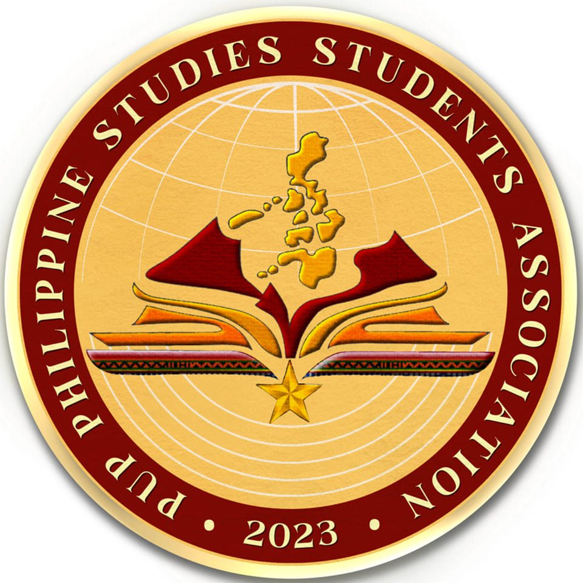
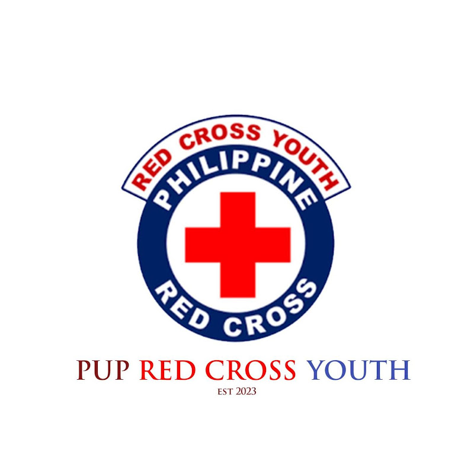

Moni Roy
Student

COMMIT is an academic organization under PUP ITECH's (OMIT) Department and is committed to guiding its members toward personal and academic empowerment, with the goal of benefiting themselves and the community.
How Students Can Join Our Organization:
Requirements and Guidelines for Joining:
The Election of Executive Committee
The members of the Executive Committee shall be elected by the general membership of the organization through a fair and transparent election process. Elections for the Executive Committee shall be held annually (or as specified by the organization’s schedule). All eligible members of the organization shall have the right to vote in the elections. Candidates for the Executive Committee must meet the following eligibility criteria:
Follow the COMMIT Facebook Page.
Appointment of the Board of Committees
The members of the Board of Committees, including Committee Chairs and members, shall be appointed by the President, in consultation with the Executive Committee and the Organization Adviser. The appointment process shall be based on the qualifications, skills, and interests of potential candidates as well as the needs of the organization. The eligibility criteria for committee appointments are as follows:
Committee Chairs are responsible for selecting and appointing their committee members in collaboration with the President. All appointments must receive the approval and recommendation of the organization adviser before they are finalized.
Election of the Board of Representatives
The members of the Board of Representatives, including representatives from 1st-year, 2nd-year, and 3rd-year students, shall be elected by the general membership of the organization through a fair and transparent election process. The eligibility criteria for representatives are as follows:
ORGANIZATION HIGHLIGHTS:
The purpose of this organization is to guide the students of the PUP Institute of Technology - Department of Office Management and Information Technology concerning all academic matters.

PUP PhilSSA is an academic organization for BA Philippine Studies students, focused on engaging with social, economic, and political issues while building a supportive community.
LEARN MORE
PUP The Symposium is a student organization that promotes philosophy, encourages engagement, and fosters deeper understanding within the university community.
LEARN MORE
We are a pioneering student organization focused on AWS and cloud computing, building a nationwide community of passionate learners driving innovation through Amazon Web Services.
LEARN MORE
The Seeds of the Nations (SONs) is a campus-based ministry, which exists to develop young people in their character, knowledge, skills and vision.
LEARN MORE
PUP RCYC promotes Red Cross values and youth programs within PUP, fostering volunteerism, leadership, and community service under the Philippine Red Cross Manila Chapter.
LEARN MORE